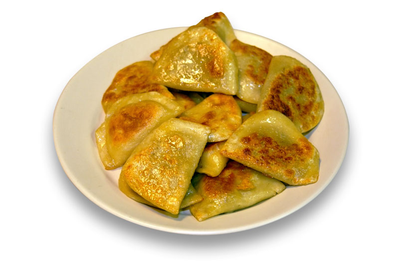

Back to Odin Recipes
Simon's Famous Pierogi and Eggs

Description
Take a trip with me to Poland! Or rather, a trip to
the frozen pierogi section at your local grocer.
These pierogi will taste just like grandmas, and are paired
with a lovely side of scrambled eggs.
Ingredients
- Half a box of Mrs. T's Frozen Pierogi's (any flavor)
- 4 large eggs
- Olive oil
- Salt
- Pepper
Steps
- Place the pierogi on a plate and microwave them for
2 minutes on high
- Oil the pan and let it start to heat up on medium heat
- When the pan is sufficiently heated, place pierogi in pan
and fry on both sides for 4 minutes each, flipping every minute
- When the pierogi are golden brown, remove from pan and let sit on
a plate while preparing the eggs
- Using the leftover oil from the pan, add the eggs and lightly scramble
for 1 minute
- Remove eggs and place onto the plate with the pierogi. Lightly season with
Salt and Pepper. Enjoy!
Back to Odin Recipes